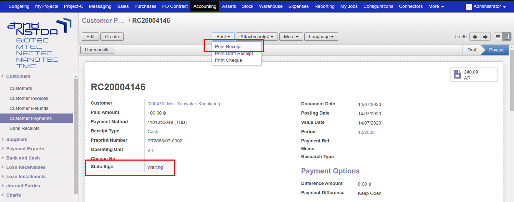
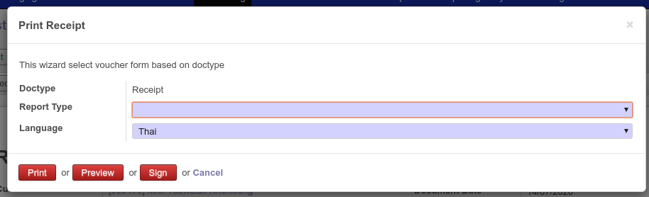
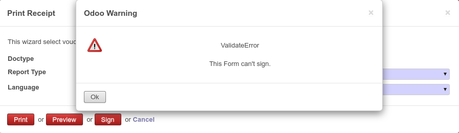

การส่งเอกสารในระบบ PABI2 เพื่อลงลายมือชื่ออิเล็กทรอนิกส์
เอกสารที่ระบบ Docsign Server รองรับมีทั้งหมด 4 ประเภท คือ
- ใบเสร็จรับเงิน / ใบกำกับภาษี
- ใบเสร็จรับเงิน / ใบกำกับภาษี 300% (ในระบบ PABI2 คือ 200%)
- ใบลดหนี้ / ใบกำกับภาษี
- ใบส่งของ / ใบกำกับภาษี (ส่งจาก mySale)
วิธีการลงลายมือชื่ออิเล็กทรอนิกส์
- ไปที่เมนู Accounting > Customers > Customer Payments
- ที่หน้าเอกสารจะมี Field เพิ่มขึ้นมาชื่อว่า State Sign เพื่อบอกสถานะการลงลายมือชื่ออิเล็กทรอนิกส์ของเอกสารนั้น ๆ
- Print > Print Receipt

ที่หน้า Print จะมีปุ่มเพิ่มขึ้นมา 3 ปุ่มคือ Preview, Sign และ Update Sign
- Preview คือ การสร้างเอกสารใน Docsign Server และส่งกลับมาที่ระบบต้นทาง โดยจะไม่มีการลงลายมือชื่ออิเล็กทรอนิกส์ เพื่อให้ผู้ใช้งานเห็นเอกสารก่อนที่จะลงลายมือชื่ออิเล็กทรอนิกส์
- Sign คือ การสร้างเอกสารใน Document Server และส่งข้อมูลทั้งหมดไปลงลายมือชื่ออิเล็กทรอนิกส์ ก่อนที่จะส่งกลับมาที่ต้นทาง
- Update Sign จะเห็นแทนปุ่ม Sign เมื่อเอกสารนั้นเคยลงลายมือชื่ออิเล็กทรอนิกส์ไปแล้ว ใช้สำหรับการแก้ไขข้อมูลในเอกสารนั้น

- เลือกฟอร์มที่ต้องการลงลายมือชื่ออิเล็กทรอนิกส์ ถ้าฟอร์มที่เลือกนั้นไม่สามารถลงลายมือชื่ออิเล็กทรอนิกส์ได้ระบบจะขึ้น Error ซึ่งเอกสารที่รองรับการลงลายมือชื่ออิเล็กทรอนิกส์ สามารถดูได้จากด้านบน

- กรณีต้องการดูตัวอย่างเอกสารก่อนลงลายมือชื่ออิเล็กทรอนิกส์จริง สามารถคลิกที่ปุ่ม Preview แล้วระบบจะสร้างเอกสารให้ที่ Attachment File

- เมื่อตรวจสอบข้อมูลถูกต้องแล้วสามารถคลิกปุ่ม Sign ได้เลย ซึ่งในระบบจะยืนยันการทำรายการอีกทีหนึ่ง
ถ้าระบบลงลายมือชื่ออิเล็กทรอนิกส์สำเร็จ กรณีมีเอกสารที่เคย Preview ไว้จะหายไป และมีเอกสารที่ลงลายมือชื่ออิเล็กทรอนิกส์สำเร็จมาแทนที่ หากไม่เคย Preview จะพบว่ามีเอกสารไฟล์แนบเพิ่มขึ้นมา ซึ่งจะเก็บในรูปแบบ URL Link
กรณีที่มีการลงลายมือชื่ออิเล็กทรอนิกส์ผิดพลาด ระบบจะแสดงข้อความ Error ประมาณนี้

สาเหตุหลัก ๆ ที่จะทำเกิด Error นั้น ส่วนใหญ่เกิดจากการที่ระบบต้นทางไม่มีข้อมูลบางส่วนที่ docsign server ต้องการ ซึ่งในที่นี้คือ ลูกค้าไม่มีข้อมูลเลขประจำตัวผู้เสียภาษี ก็ให้ไปทำการเพิ่มเลขประจำตัวผู้เสียภาษีที่ลูกค้า แล้วให้ลองอีกครั้งหนึ่ง
อีกสาเหตุที่มีโอกาสเกิดคือ เอกสารที่ทำรายการไม่มี Product และ Product Code มีการเว้นช่องว่างไว้ 1 วรรค ทำให้ระบบ Error ได้